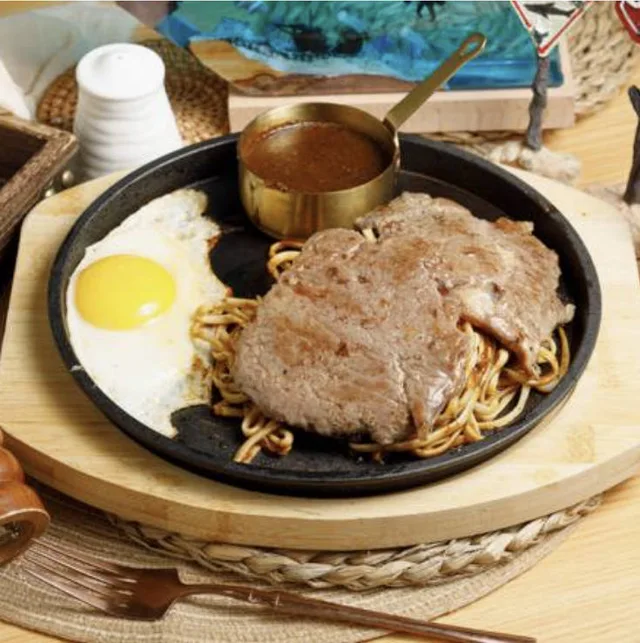
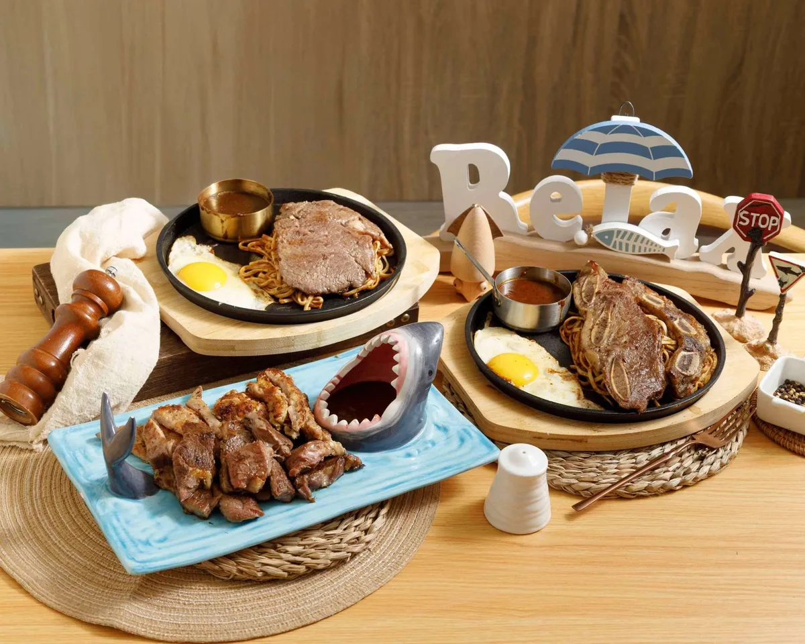
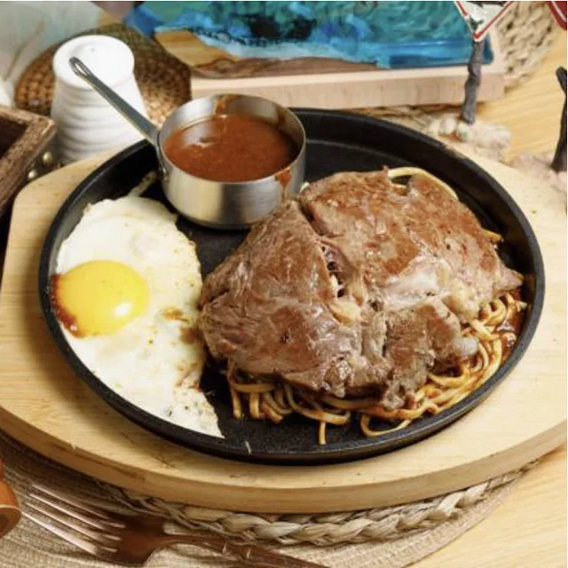
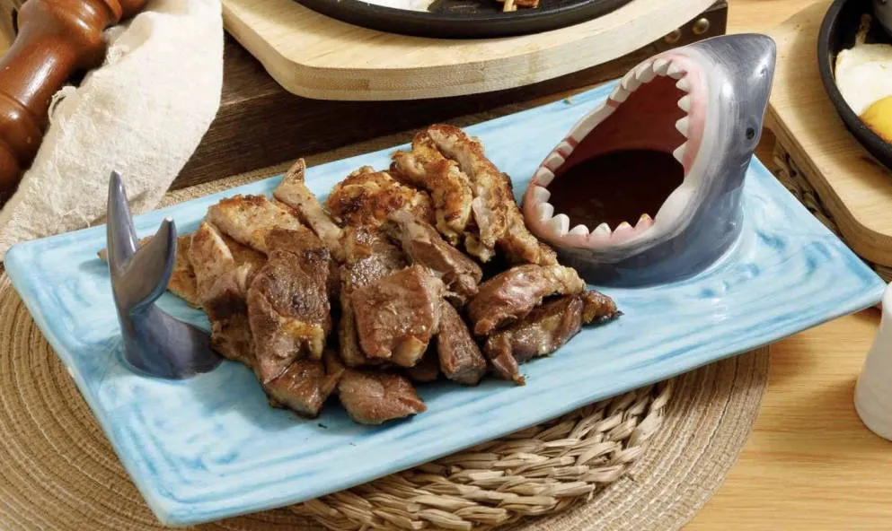
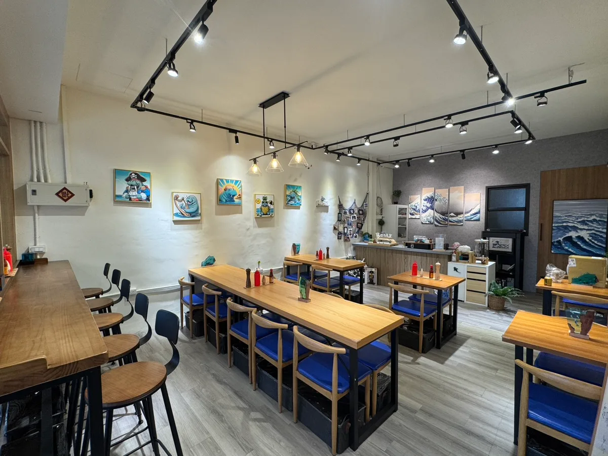

經典台式牛排，今天就從這一份開始。
HELLO, HI STEAK. · 台中南屯
熱鐵板上桌，每一口都超滿足。
牛排、雞腿排、豬排，搭配荷包蛋、麵與醬汁。把一頓日常，吃得有滋有味。
台中市南屯區南屯路二段721-1號


經典台式牛排，今天就從這一份開始。

菜單標示 2.4 cm，想吃厚切時的選擇。

喜歡香酥外層，也可以選擇雞腿排。
價格依目前門市菜單整理；實際供應及價格以門市公告為準，外送平台售價可能不同。

A LITTLE SEA, A LOT OF JOY
木質桌椅、藍色座椅，還有牆上的海洋風景。海牛排在台中南屯，留一個位置給想好好吃飯的你。
一個人下班後吃晚餐，和朋友聊聊近況，或帶家人一起來。選一份喜歡的排餐，讓今天多一點滿足。
BEFORE YOUR FIRST BITE
A FEW THINGS TO KNOW
建議多人聚餐、假日或有特定用餐時間時，先撥打 04-3609-8099 詢問訂位與當日候位情況。是否能保留座位、可接受人數與安排方式，以門市回覆為準；網站沒有線上即時訂位功能。
依目前門市菜單，主餐約 NT$180–340：經典雞排與里肌豬排 NT$180，沙朗及雞腿排 NT$190，厚切牛排 NT$270，帶骨牛小排 NT$340。加購與單點另計，詳細品項請看 完整菜單。實際價格以門市公告為準，外送平台可能不同。
海牛排 Hi Steak 位於台中市南屯區南屯路二段721-1號。請前往 交通與營業資訊 開啟 Google Maps 導航；停車位置、費用與當日路況請出發前確認。